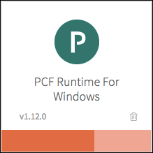
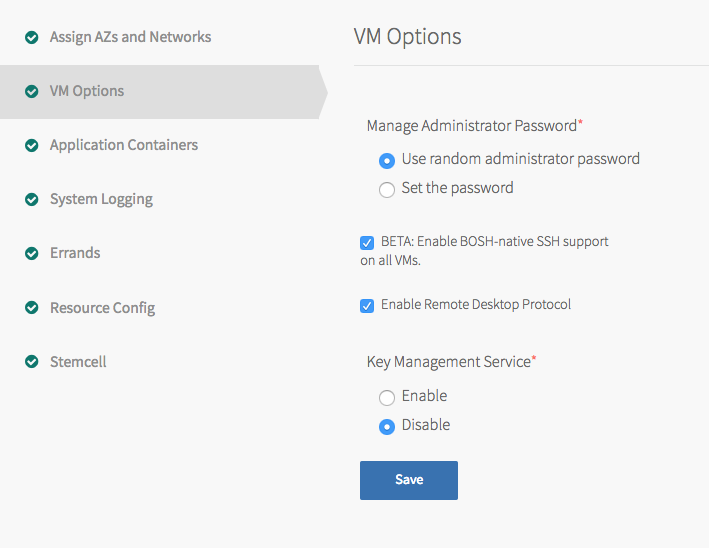
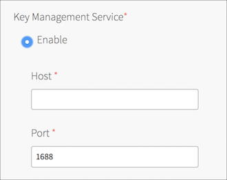
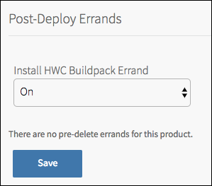
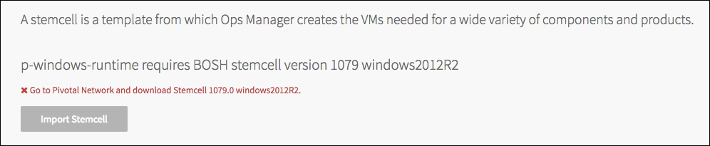
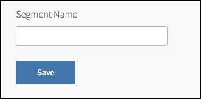

Deploying PAS for Windows 2012R2
This topic describes how to install and configure the Pivotal Application Service (PAS) for Windows 2012R2 tile. The PAS for Windows 2012R2 tile installs Windows cells on your Pivotal Cloud Foundry (PCF) deployment.
Requirements
To install the PAS for Windows 2012R2 v1.12 tile, you must have Ops Manager v1.12.0 or later and Elastic Runtime v1.12.0 or later deployed to vSphere, Amazon Web Services (AWS), Google Cloud Platform (GCP), or Azure.
Step 1: Confirm Elastic Runtime Settings
There are two settings in the Elastic Runtime tile that affect the Windows cells installed by the PAS for Windows 2012R2 tile. Configure these settings as desired:
- In the Networking section, if you select the Disable SSL certificate verification for this environment checkbox, SSL certificate verification is disabled for Windows cells.
- In the System Logging section, if you configure an external syslog aggregator, logs are drained from Windows cells as well as non-Windows cells.
Step 2: Install the Tile
Download the product file from the Pivotal Application Service for Windows 2012R2 section of Pivotal Network.
Navigate to the Ops Manager Installation Dashboard and click Import a Product to upload the product file.
Click + under the uploaded PAS for Windows 2012R2 tile to add it to your staging area.
Step 3: Configure and Deploy the Tile
Click the newly added PAS for Windows 2012R2 tile.

Click Assign AZs and Networks or Assign Networks. The name of the section varies depending on your IaaS.
Assign your AZs and networks and click Save.
Click VM Options.

Specify how you would like to manage the administrator password for your Windows VMs. The default option is to Use random administrator password.
(Optional) Select the BETA: Enable BOSH-native SSH support on all VMs checkbox to start the Microsoft beta port of the OpenSSH daemon on port 22 on all VMs. Users will be able to SSH onto Windows VMs with the
bosh sshcommand, and enter a CMD terminal as an administrator user. They can then runpowershell.exeto start a PowerShell session.(Optional) Select the Enable Remote Desktop Protocol checkbox to enable RDP connections to the Windows Cells.
Note: This feature is beta and not considered production-ready.
(Optional) If you want all VMs to support connection through Remote Desktop Protocol (RDP), click Enable Remote Desktop Protocol.
(Optional) If you want to configure a Key Management Service (KMS) that your volume-licensed Windows cell can register with, perform the following steps:
- Click Enable
- For the Host field, enter the KMS hostname.
- For the Port field, enter the port number. The default port number is
1688.

(Optional) If you want your PAS for Windows 2012R2 application workloads to be deployed to an isolation segment, perform the steps in Assign a Tile to an Isolation Segment below.
(Optional) If an antivirus scanner runs on your VMs, configure the scanner to let the BOSH agent download and uncompress files. See Configure Antivirus for Windows Cells for details.
(Optional) To configure Windows cells to send Windows Event logs to an external syslog server, click System Logging and perform the steps in the Send Cell Logs to a Syslog Server section.
Click Errands. Pivotal recommends that you set the Install HWC Buildpack Errand to On. This ensures that you receive the most up-to-date HWC Buildpack.

Click Resource Config and adjust the number and VM types of your Windows cells as needed. Ensure that all VMs have disk sizes that match the possible sizes listed in the Root Disk Sizing table. If you are deploying PAS for Windows 2012R2 on Azure, see the Configure Resources section of the Deploying the Azure Light Stemcell topic.
Click Save.
Click Stemcell. Record the stemcell version number required by the tile.

Retrieve the stemcell by following the steps below for your IaaS.
- For vSphere, you must create your own stemcell. For more information, see either Creating a vSphere Stemcell Manually or Creating a vSphere Stemcell by Hand.
- For AWS, GCP, and Azure, navigate to the Stemcells for PCF (Windows) page of Pivotal Network. For more information, see the Light Stemcells section of the Using Windows Stemcells topic.
Click Save.
Return to the Ops Manager Installation Dashboard and click Apply Changes to install the PAS for Windows 2012R2 tile.
Step 4: (Optional) Create More Tiles
If you want to run Windows cells in multiple isolation segments, you must create and configure additional PAS for Windows 2012R2 tiles. See Windows Cells in Isolation Segments below for how to do this.
Windows Cells in Isolation Segments
Isolation segments are compartmentalized resource pools for Diego cells. The cells in one isolation segment share routing, computing, and logging resources with other cells in the same segment, and do not use resources from other isolation segments.
To run Windows cells in multiple isolation segments, you need to create and install multiple PAS for Windows 2012R2 tiles and configure each to run in a different isolation segment.
If the isolation segments do not already exist in the Cloud Controller Database (CCDB), you need to create them there.
See Replicate a Tile for how to create multiple copies of the PAS for Windows 2012R2 tile.
See Assign a Tile to an Isolation Segment for how to associate a PAS for Windows 2012R2 tile with an isolation segment, so that its cells run in that segment.
See the Create an Isolation Segment section of the Managing Isolation Segments topic for how to add an isolation segment to the CCDB.
Replicate a Tile
To make multiple copies of the PAS for Windows 2012R2 tile that you can assign to different isolation segments, use the Replicator tool as follows:
Download the Replicator tool from the PAS for Windows 2012R2 section of Pivotal Network.
Navigate to the directory where you downloaded the Replicator tool.
Replicate the tile:
./replicator \ -name "YOUR-NAME" \ -path /PATH/TO/ORIGINAL.pivotal \ -output /PATH/TO/COPY.pivotalReplace the values above with the following:
YOUR-NAME: Provide a unique name for the new PAS for Windows tile. The name must be ten characters or less and only contain alphanumeric characters, dashes, underscores, and spaces./PATH/TO/ORIGINAL: Provide the absolute path to the original PAS for Windows tile you downloaded from Pivotal Network./PATH/TO/COPY: Provide the absolute path for the copy of the PAS for Windows tile that the Replicator tool produces.
Install and configure the Windows isolation segment, using the new
.pivotalfile and following the procedures in this topic, starting with the Import a Product step of Step 2: Install the Tile.
Assign a Tile to an Isolation Segment
To assign a PAS for Windows 2012R2 tile to an isolation segment, perform the following steps:
Open the Application Containers pane.

Under Segment Name, enter the name for the isolation segment to associate the tile with. If you are creating a new isolation segment, ensure that this name is unique across your PCF deployment.
Click Save.
If you are creating a new isolation segment, follow the steps in the Create an Isolation Segment section of the Managing Isolation Segments topic to add the isolation segment to the CCDB.
Configure Antivirus for Windows Cells
Diego cell VMs routinely download and uncompress files, while antivirus scanners scan files once they are downloaded or uncompressed. When an antivirus scanner program runs in a directory that BOSH is actively downloading or compressing into, scanner actions can block BOSH processes and cause hard-to-debug “Access is denied” errors.
To prevent these errors, configure your antivirus scanner to disable on-access scanning for the following directories on your Windows cell:
C:\boshC:\var\vcapC:\containerizer